| ・ 回流水槽清掃 (R01.09.04-05) | |||
去年と同様に、卒論前に回流水槽を清掃です。先日のレビューを反映して、 揚抗計とステレオシステムの干渉がなくなって、作業性がすごく向上しました。掃除も簡易にということでしたが、結局は全部ばらしています。B4のS永さんにとって構造の理解になりました。 めんどくさいですが、式年遷宮のように技術伝承としてよいのかもしれません。 |
|||
|
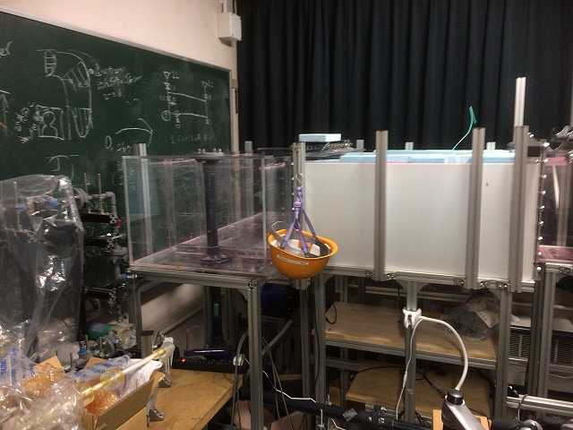
スペーサーを外して |
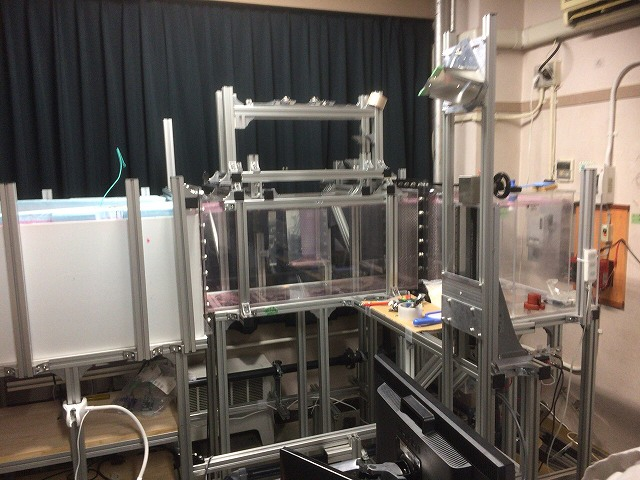
スッキリ | ||
|
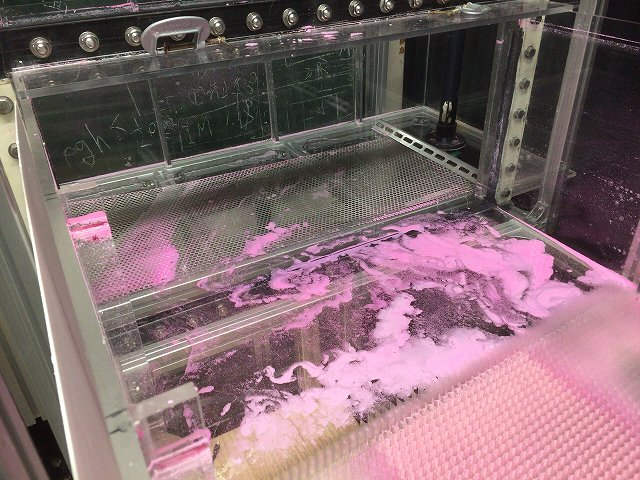
トレーサーもだいぶ溜まってます |
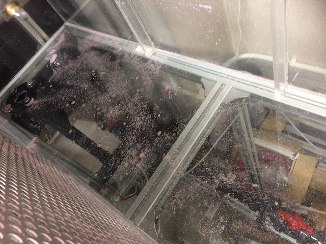
こっちも | ||
|
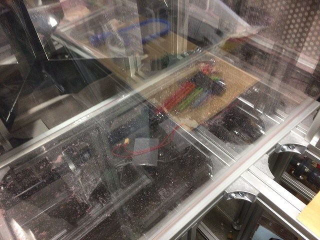
あとは水で洗浄 |
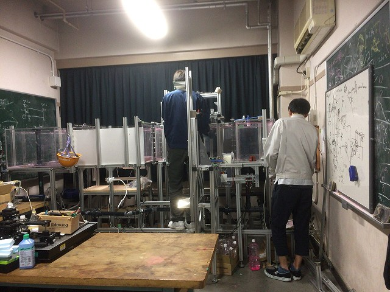
さてと | ||
|
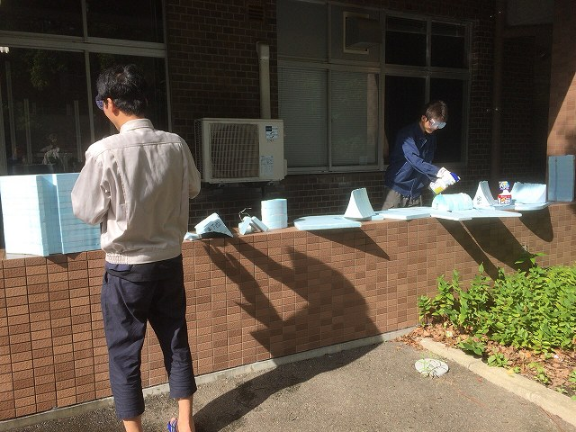
前日の落雷は焦りましたが、今日は水を使うにはもってこいの天気 |
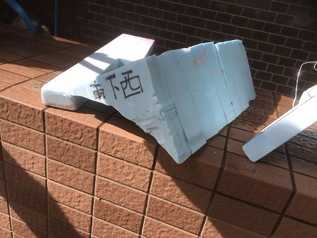
祇園祭の山車と同じく | ||
|
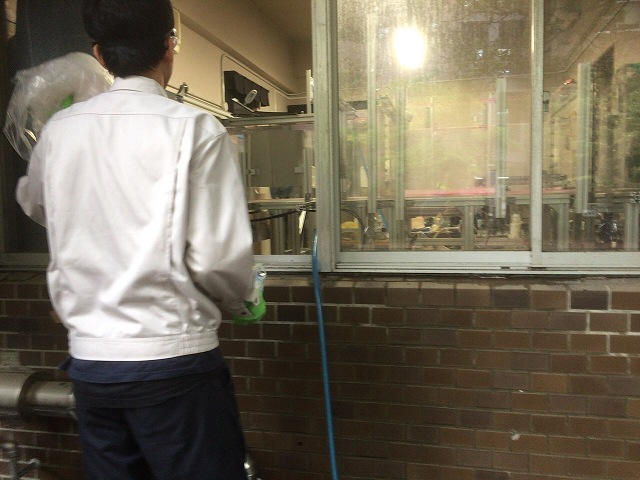
ぼちぼち終わり |
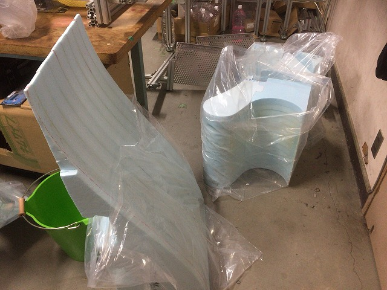
キレイになった | ||
|
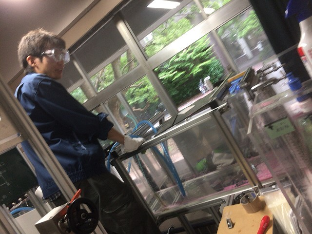
あとは |
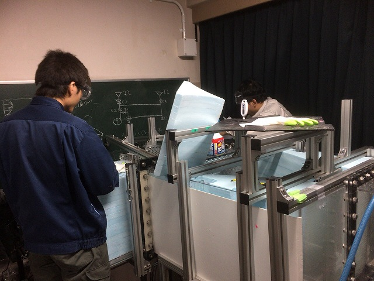
組み付け | ||
|
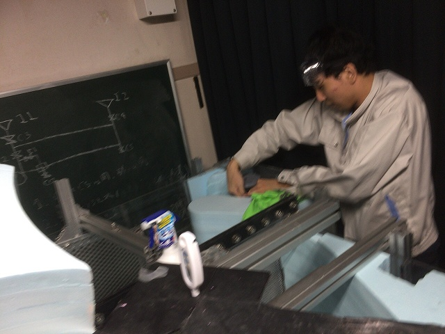
手足が長いと作業性良いです |
|||